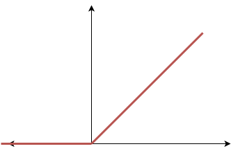

- Input: Given any input \(X\) the first thing we do is flatten it. For example if \(X\) is a rgb image of \(64 \times 64\), then \(X \in \mathbb{R}^{64 \times 64 \times 3}\) (for each of the \(64 \times 64\) pixels we have three color channels: red, green, blue), is flattened into a vector in \(\mathbb{R}^{(64*64*3) \times 1}\)
-
Neuron: is an operation that has two parts:
- Linear part: we denote the linear part like \(z^{[i]}\), where \(i\) is the current layer.

- Activation part

- Layer: a layer is a compound of neurons that are not connected with each other.

The principal steps of the algorithm are:
- Initialize the weights \(w\) and biases \(b\) randomly
- Find the optimal \(w, b\)
- Use the optimized \(w, b\) to predict the output by using the formula \(\hat{y} = \sigma(wx +b)\)
The output layer will be different depending on the problem we are tackling. For example if we want to discriminate between 3 classes then the output layer could be as follows:

So now the output is a vector \(\hat{y} \in \mathbb{R}^{c \times 1}\) where \(c\) is the number of classes.
The previous classifier allows for outputting multiples classes in the result, that is we can obtain a predicted output of the form \(\hat{y} = \begin{bmatrix} 1 \\1 \\ 0 \end{bmatrix}\). What if we want to add a constraint such that only one class can be predicted. Then we use the softmax function as the activation function on the output layer:

Thus, instead of a probability for each class what we obtain is a probability distribution for all the classes.
On linear regression we do not want the activation function to be linear, because then the whole network becomes a very large linear regression. Instead we use as an activation function the ReLU function (Rectified Linear Unit), whose output is zero if the input value is negative and linear otherwise.

The loss function when using the sigmoid function on the output layer is as follows:
\begin{align} \mathcal{L} = - \frac{1}{Q} \sum_{k=1}^Q [y^{(k)} \log(\hat{y}^{(k)}) + (1- y^{(k)})\log(1-\hat{y}^{(k)})] \end{align}Where \(\hat{y}^{(k)}\) are the predicted values and \(Q\) is the total number of neurons on the output layer.
However, if we use the softmax function as the activation function on the last layer we have to use a different derivative because this function does depend on the outputs of the other neurons. Thus, we make use of a function called cross entropy loss:
\begin{align} \mathcal{L}_{CE} = - \sum_{k=1}^Q y^{(k)} \log(\hat{y}^{(k)}) \end{align}For linear regression we use as the loss function the L1-Norm or the L2-Norm. The latter is defined as follows:
\begin{align} \mathcal{L} = || \hat{y} - y ||_2^2 \end{align}The forward propagation equations are the following:
\begin{align} z^{[i]} = w^{[i]} a^{[i-1]} + b^{[i]} \tag{1} \end{align}Where \(i\) is the layer with \(i \geq 1\), and the first layer equals the input matrix, that is \(a^{[0]} = X\). By applying the activation function over \((1)\):
\begin{align} a^{[i]} = g(z^{[i]}) \end{align}Where \(g\) is the activation function (e.g \(\sigma(z^{[i]})\)).
Now, what are the shapes of these matrices?
- \(z^{[i]} \in \mathbb{R}^{S_i \times m}\)
- \(a^{[i]} \in \mathbb{R}^{S_i \times m}\)
Where \(S_i\) is the number of neurons on the ith layer and \(m\) is the number of examples. Note that the shape of the final layer changes depending on the task. So if \(K\) is the number of layers:
- In linear regression: \(\hat{y} = a^{[K]} \in \mathbb{R}^{1 \times m}\)
- In multi-class classification: \(\hat{y} = a^{[K]} \in \mathbb{R}^{c \times m}\), where \(c\) is the number of classes.
Also the shape of the weights are \(w[i] \in \mathbb{R}^{S_i \times S_{i-1}}\), that is, this matrix is compatible with the outputs of the previous layer (\(a^{[i-1]} \in \mathbb{R}^{S_{i-1} \times m}\)) and the linear part of the next layer (\(z^{[i]} \in \mathbb{R}^{S^i \times m}\)).
However, the bias are \(b^{[i]} \in \mathbb{R}^{S^i \times 1}\), therefore we cannot perform an element wise summation because the shape of \((w^{[i]} a^{[i-1]}) \in \mathbb{R}^{S_i \times m}\) and \(b^{[i]}\) are not compatible. To avoid this problem we apply a technique called broadcasting to \(b\), such that we replicate \(b^{[i]}\) \(m\) times:
\begin{align} \hat{b}^{[i]} = \begin{bmatrix} | & | & \cdots & | \\ b^{[i]} & b^{[i]} & \cdots & b^{[i]} \\ | & | & \cdots & | \\ \end{bmatrix} \in \mathbb{R}^{S_i \times m} \end{align}To sum up, the shapes of the data and the parameters on each layer \(i\) are:
\begin{align} \hat{b}^{[i]} = \begin{bmatrix} | & | & \cdots & | \\ b^{[i]} & b^{[i]} & \cdots & b^{[i]} \\ | & | & \cdots & | \\ \end{bmatrix} \in \mathbb{R}^{S_i \times m} \end{align} \begin{align} w^{[i]} = \begin{bmatrix} | & | & \cdots & | \\ w^{[i](1)} & w^{[i](2)} & \cdots & w^{[i](S_{i-1})} \\ | & | & \cdots & | \\ \end{bmatrix} \in \mathbb{R}^{S_i \times S_{i-1}} \end{align}Note that for each example \(j\) on layer \(i\) \(z^{[i](j)} = (w^{[i]} a^{[i-1](j)} + \hat{b}^{[i]})\), then:
\begin{align} z^{[i]} = \begin{bmatrix} | & | & \cdots & | \\ z^{[i](1)} & z^{[i](2)} & \cdots & z^{[i](m)} \\ | & | & \cdots & | \\ \end{bmatrix} \in \mathbb{R}^{S_i \times m} \end{align} \begin{align} a^{[i]} = \begin{bmatrix} | & | & \cdots & | \\ g(z^{[i](1)}) & g(z^{[i](2)}) & \cdots & g(z^{[i](m)}) \\ | & | & \cdots & | \\ \end{bmatrix} \in \mathbb{R}^{S_i \times m} \end{align}Now we present a small example of how forward propagation works on neural networks: